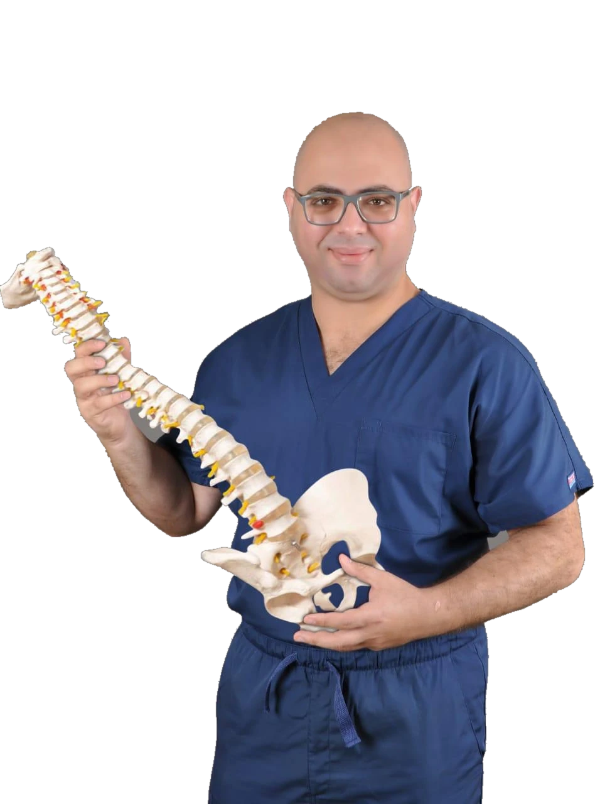

جراحات المخ والأوعية
أورام المخ، والأوعية الدموية المخية، والتدخلات الجراحية المرتبطة بها.
استكشف التخصصد. أمين الغنام — خبرة علمية وتدريب دولي في جراحات المخ والأعصاب والعمود الفقري، مع اهتمام بفهم تفاصيل كل حالة وتوضيح الخيارات العلاجية المناسبة لها.

تقييم وجراحات متخصصة
المناظير والجراحات المحدودة التدخل
دقة وتقنيات متقدمة
استكشف مجالات خبرة الدكتور، وتعرّف بصورة مبسطة على أنواع الحالات والجراحات التي تندرج تحت كل تخصص.
أورام المخ، والأوعية الدموية المخية، والتدخلات الجراحية المرتبطة بها.
استكشف التخصصالانزلاق الغضروفي، والضغط على الأعصاب، وجراحات العمود الفقري بالمنظار.
استكشف التخصصالأعصاب الطرفية، والجراحات الدقيقة، والتدخلات المتعلقة بالجهاز العصبي.
استكشف التخصصتقييم آلام العمود الفقري والأعصاب، وبحث الخيارات العلاجية الملائمة لكل حالة.
استكشف التخصصالدكتور أمين الغنام متخصص في جراحات المخ والأعصاب والعمود الفقري. وتضم مسيرته تدريبات وزمالات مهنية مرتبطة بمؤسسات طبية فرنسية، إلى جانب اهتمام بالجراحات الميكروسكوبية والمناظير والتدخلات المحدودة.

العلم أساس القرار. والمريض محور الاهتمام.
تُبرز الملفات المهنية المتاحة تدريبات وزمالات في مؤسسات فرنسية متخصصة بمجالات جراحة الأعصاب، والأوعية الدموية المخية، وتقنيات الجراحات الدقيقة.
زمالة فرنسية في جراحة المخ والأعصاب بحسب الملف المهني المتاح.
تدريبات وزمالات مرتبطة بالقسطرة وجراحات الأوعية الدموية المخية.
جراحات ميكروسكوبية ومناظير وتدخلات محدودة في تخصصات المخ والعمود الفقري.
فيديوهات ولقاءات من الروابط التي شاركها فريق الدكتور. سيتم تصنيفها موضوعياً بعد مراجعة محتواها واعتماد عناوينها.


ملاحظة: أسماء الفيديوهات وصفية مؤقتة، وروابط YouTube تُفتح في مشغل عند الضغط فقط.
الهدف من الموقع تسهيل وصولك للمعلومة الصحيحة والخطوة التالية المناسبة، دون استبدال الكشف الطبي أو الوعد بنتيجة علاجية محددة.
معلومات مبسطة عن جراحات المخ والأعصاب والعمود الفقري.
اجمع التقارير والفحوصات السابقة، وحدد الأعراض التي تود مناقشتها.
راجع طرق التواصل والحجز فور اعتماد بيانات العيادات الحالية.
اكتشف التخصصات وطرق التواصل المتاحة.
المعلومات التالية للتوعية العامة فقط، والتوصية الطبية تتحدد بعد التقييم الفردي.
لا، ليس بالضرورة. القرار يعتمد على الأعراض والفحص السريري ونتائج الفحوصات، وقد تناسب بعض الحالات خيارات علاجية غير جراحية.
يفيد إحضار التقارير والأشعة والتحاليل السابقة إن وجدت، وقائمة بالأدوية الحالية، مع وصف واضح للأعراض وتاريخ بدايتها.
لا. الفيديوهات وسيلة للتثقيف، ولا يمكن الاعتماد عليها وحدها لتشخيص حالة أو اختيار خطة علاجية.